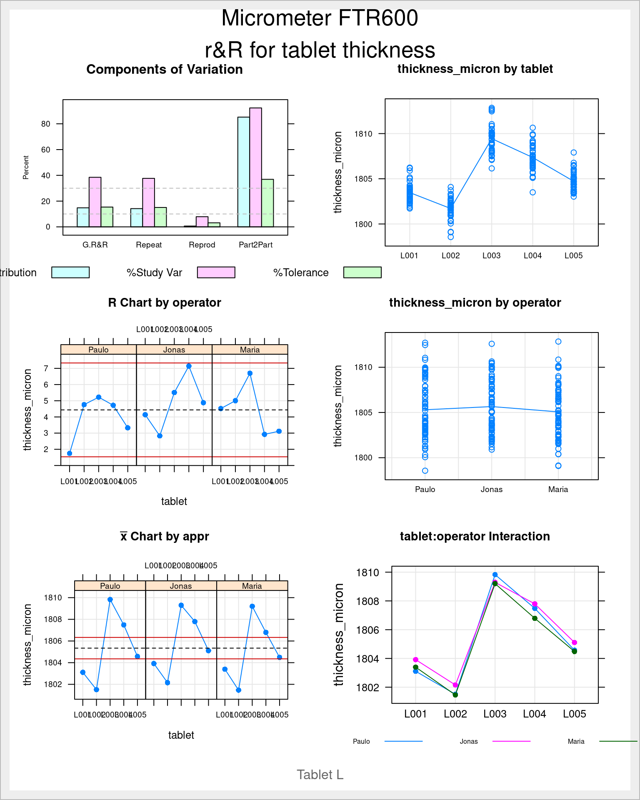
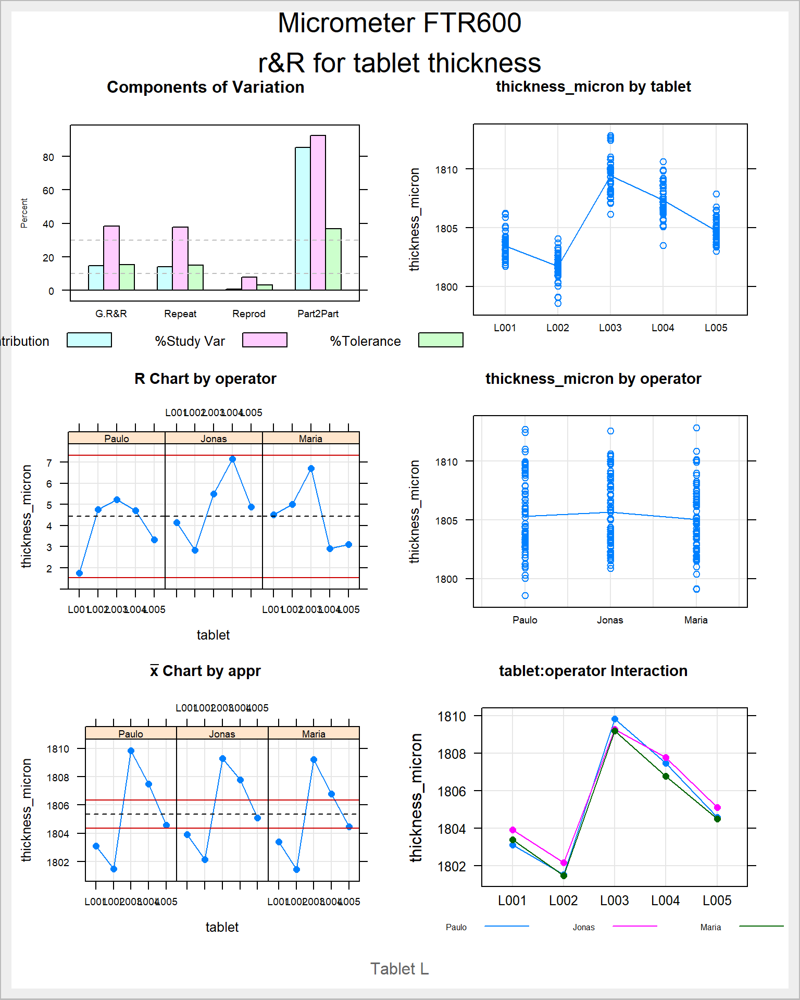

Measurement System Analysis
Validation of a measurement device
Trueness
The juice production plant
The Quality Control Manager of a Juice producing plant acquired a faster dry matter content measurement device from the supplier DRX. An important reduction of the control time was the rational for the acquisition and now before finally putting it into operation its performance is being assessed and validated.
Figure 1: juice bottling line
In this case study we will look into the assessment of the linearity which is the difference in average bias throughout the measurement range.
Dry matter content for the company top seller juice_bottling have around 12% dry matter as for example Premium Fresh Apple juice: 12.4 % and Austrian Beetroot: 13.2% and some other specialities may have a higher content up such as Organic Carrot with 16.3%.
It has been decided to start by checking the equipement in the range of 10 to 20% dry matter content.
Lets look into the measurements obtained on the juice bottling process:
summary(juice_drymatter) product drymatter_TGT speed particle_size part
Length:108 Min. :10 Min. :20.0 Min. :250 Min. :1
Class :character 1st Qu.:10 1st Qu.:20.0 1st Qu.:250 1st Qu.:1
Mode :character Median :15 Median :22.5 Median :275 Median :2
Mean :15 Mean :22.5 Mean :275 Mean :2
3rd Qu.:20 3rd Qu.:25.0 3rd Qu.:300 3rd Qu.:3
Max. :20 Max. :25.0 Max. :300 Max. :3
drymatter_DRX drymatter_REF
Min. : 9.720 Min. : 9.97
1st Qu.: 9.898 1st Qu.:10.02
Median :14.700 Median :15.01
Mean :14.706 Mean :15.00
3rd Qu.:19.503 3rd Qu.:20.00
Max. :19.710 Max. :20.03 we see raw data for the DRX and Ref equipment allowing us to calculate the difference between the two devices for each measurement:
juice_drymatter <- juice_drymatter %>%
mutate(bias = drymatter_DRX - drymatter_REF, part = as_factor(part))
summary(juice_drymatter$bias) Min. 1st Qu. Median Mean 3rd Qu. Max.
-0.6300 -0.4025 -0.2850 -0.2979 -0.1875 -0.0700 We immediatly see a median bias of -0.2 Lets explore further.
Bias plot
juice_drymatter %>%
ggplot(aes(x = drymatter_REF, y = bias)) +
geom_point() +
geom_smooth(method = "lm", se = T, ) +
coord_cartesian(
xlim = c(9,21),
ylim = c(-.75,0), expand = TRUE) +
theme_industRial() +
labs(title = "Dry matter method validation",
subtitle = "Gage Linearity",
caption = "Dataset: juice_drymatter233A, Operator: S.Jonathan)")
The linear model is well adapted in this case, this by seing the position of the slope close to the averages of each level of the factor. Nevertheless the slope is rather steep showing a clear increase of the bias (in the negative direction) with the increase in dry matter content.
Bias report
juice_drymatter %>%
group_by(drymatter_TGT) %>%
summarise(bias_mean = mean(bias, na.rm = TRUE),
bias_median = median(bias, na.rm = TRUE)) %>%
select(drymatter_TGT, bias_mean, bias_median) %>%
kable(align = "c", digits = 2)| drymatter_TGT | bias_mean | bias_median |
|---|---|---|
| 10 | -0.17 | -0.15 |
| 15 | -0.29 | -0.31 |
| 20 | -0.44 | -0.44 |
Mean and median bias are very close. A decision now needs to be taken on which systematic offset to apply depending on the operational context. If most products on the line where the device is used a simplified operational procedure with a unique offset of 0.2 can be sufficient.
Precision
The tablet compaction process
Modern pharmaceutical tablet presses reach output volumes of up to 1,700,000 tablets per hour. These huge volumes require frequent in-process quality control for the tablet weight, thickness and hardness.
In our case study we’re going to measurement the precision of the measurement method used to determine the thickness of the tablet.

Figure 5: Tablet thickness micrometer
According to the ISO 5725 the Precision of a measurement method is the combination of the Reproductibility & Reproducibility.
Data loading
We use here the data from the tablet thickness method validation:
str(tablet_thickness)spec_tbl_df[,11] [675 × 11] (S3: spec_tbl_df/tbl_df/tbl/data.frame)
$ Position : chr [1:675] "Position 1" "Position 1" "Position 1" "Position 1" ...
$ Size : chr [1:675] "L" "L" "L" "L" ...
$ Tablet : chr [1:675] "L001" "L001" "L001" "L001" ...
$ Replicate : num [1:675] 1 2 3 4 5 1 2 3 4 5 ...
$ Day : chr [1:675] "Day 1" "Day 1" "Day 1" "Day 1" ...
$ Date [DD.MM.YYYY] : chr [1:675] "18/11/2020" "18/11/2020" "18/11/2020" "18/11/2020" ...
$ Operator : chr [1:675] "Paulo" "Paulo" "Paulo" "Paulo" ...
$ Thickness [micron] : num [1:675] 1803 1803 1804 1804 1803 ...
$ Temperature [°C] : num [1:675] 22.3 22.3 22.3 22.4 22.6 22.9 22.8 22.8 22.7 22.7 ...
$ Relative Humidity [%]: num [1:675] 32.7 32.8 32.8 33.4 33.4 36 36.3 36.4 36.6 36.3 ...
$ Luminescence [lux] : num [1:675] 569 580 580 584 594 ...
- attr(*, "spec")=
.. cols(
.. Position = col_character(),
.. Size = col_character(),
.. Tablet = col_character(),
.. Replicate = col_double(),
.. Day = col_character(),
.. `Date [DD.MM.YYYY]` = col_character(),
.. Operator = col_character(),
.. `Thickness [micron]` = col_double(),
.. `Temperature [°C]` = col_double(),
.. `Relative Humidity [%]` = col_double(),
.. `Luminescence [lux]` = col_double()
.. )We see that quite an extensive variaty of parameters was collected here including room conditions. We are mostly interested in the tablet size, thickness and operator who has performed the measurement. As these parameters are coded as characters we are going to convert them to factors:
tablet_thickness <- tablet_thickness %>%
clean_names() %>%
mutate(across(c(size, tablet, operator), as_factor))We want to establish an independed r&R by specification size (S, M or L) and so we first filter only for the first size the L.
tablet_L <- tablet_thickness %>%
filter(size == "L")Base Anova
We’re feeding the aov function from the stats package with operator and tablet factors.
tablet_L_lm <- lm(
thickness_micron ~ (
# main effects
tablet +
operator +
# 2nd order interactions
operator:tablet
),
data = tablet_L
)
tablet_L_aov <- aov(tablet_L_lm)
summary(tablet_L_aov) Df Sum Sq Mean Sq F value Pr(>F)
tablet 4 1707.1 426.8 271.457 <2e-16 ***
operator 2 13.1 6.6 4.177 0.0166 *
tablet:operator 8 11.2 1.4 0.892 0.5237
Residuals 210 330.1 1.6
---
Signif. codes: 0 '***' 0.001 '**' 0.01 '*' 0.05 '.' 0.1 ' ' 1Below we’re recreating the same analysis with the ss.rr function from the Six Sigma package. As the function allows to input the limits we’re also providing in the function arguments the current upper and lower limit of the specification.
tablet L 18’000mm3 +/- 250mm3 (18.0ml +/- 0.25ml)
gage r&R
library(SixSigma)tablet_L_rr <- ss.rr(
data = tablet_L,
var = thickness_micron,
part = tablet,
appr = operator,
alphaLim = 1,
errorTerm = "repeatability", # very important otherwise F test not identical to base aov
main = "Micrometer FTR600\nr&R for tablet thickness",
sub = "Tablet L",
lsl = 1775,
usl = 1825
)Complete model (with interaction):
Df Sum Sq Mean Sq F value Pr(>F)
tablet 4 1707.1 426.8 271.457 <2e-16
operator 2 13.1 6.6 4.177 0.0166
tablet:operator 8 11.2 1.4 0.892 0.5237
Repeatability 210 330.1 1.6
Total 224 2061.6
alpha for removing interaction: 1
Gage R&R
VarComp %Contrib
Total Gage R&R 1.64098201 14.79
Repeatability 1.57212495 14.17
Reproducibility 0.06885705 0.62
operator 0.06885705 0.62
tablet:operator 0.00000000 0.00
Part-To-Part 9.45247729 85.21
Total Variation 11.09345930 100.00
VarComp StdDev StudyVar %StudyVar %Tolerance
Total Gage R&R 1.64098201 1.2810082 7.686049 38.46 15.37
Repeatability 1.57212495 1.2538441 7.523064 37.65 15.05
Reproducibility 0.06885705 0.2624063 1.574438 7.88 3.15
operator 0.06885705 0.2624063 1.574438 7.88 3.15
tablet:operator 0.00000000 0.0000000 0.000000 0.00 0.00
Part-To-Part 9.45247729 3.0744881 18.446929 92.31 36.89
Total Variation 11.09345930 3.3306845 19.984107 100.00 39.97
Number of Distinct Categories = 3 
We can observe that the SixSigma package recreates exactly the same anova table, just calling Repeatability to the Residuals and adding an additional line with the total degrees of freedom and the total sum of squares.
Note that the argument alphaLim has been set to 1 to avoid suppressing the interaction which is in this case non significative.
Acceptance on Variance
Criteria for measurement system acceptance:
To evaluate your process variation, compare the Total Gage R&R contribution in the %Contrib column with the values in the list below:
Less than 1%: the measurement system is acceptable
Between 1% and 9%: the measurement system is acceptable depending on the application, the cost of the measurement device, cost of repair, or other factors
Greater than 9%: the measurement system is not acceptable and should be improved.
Acceptance on SD
The study variation table is established by calculating the square root of each variance (the standard deviation) and by multiplying it by 6 (the six sigma) and then again by comparing each variation with the total variation. Standard deviations are usualy more speaking to the industry professionals. This table also provides a comparison with the specification.
Criteria for measurement system acceptance:
According to the guidelines from the Automotive Industry Action Group (2010), if your system variation is less than 10% of the process variation, then it is acceptable.
To evaluate your process variation, compare the Total Gage R&R contribution in the %StudyVar column with the values in the list below:
Less than 10%: the measurement system is acceptable
Between 10% and 30%: the measurement system is acceptable depending on the application, the cost of the measurement device, cost of repair, or other factors
Greater that 30%: the measurement system is not acceptable and should be improved.
If the p-value for the operator and part interaction is 0.05 or higher, the system removes the interaction because it is not significant and generates a second ANOVA table without the interaction.
The AIAG also states that the number of distinct categories into which the measurement system divides process output should be greater or equal to 5.
The part to part variation is high which is what is expected in a study like this.
In our specific example we observe that the device cannot be accepted as the Study variation for the Total Gage r&R is 38.46% thus much higher than 30%. Furhtermore the number of distinc categories is only of 3.
Finaly to be noted that the total variation rather low when compared with the specification.
In a nutshell two questions are answered:
can the method be used to assess process performance: no the measurement system variation equals 38.4% of the process variation,
can the method be used to sort good parts from bad: yes but can be improved, the measurement system variation equals 15.3% of the tolerance.
Interaction plots
The Six Sigma package plots are similar to the interaction plots provided by other DoE packages but don’t have error bars. These can nevertheless easily be established on a needed basis as in the example below where we’re recreating the tablet:operator interaction plot with a +/- 1 standard deviation error bars.
tablet_L %>%
group_by(tablet, operator) %>%
summarise(vol_mean = mean(thickness_micron), vol_sd = sd(thickness_micron)) %>%
ggplot(aes(x = tablet, y = vol_mean, color = operator)) +
geom_point(aes(group = operator), size = 2) +
geom_line(aes(group = operator, linetype = operator)) +
geom_errorbar(aes(ymin = vol_mean - vol_sd,
ymax = vol_mean + vol_sd),
width = .1) +
scale_y_continuous(labels = label_number(big.mark = "'")) +
scale_color_viridis_d(option = "C", begin = 0.1, end = 0.9) +
# coord_cartesian(ylim = c(17950, 18150)) +
annotate(geom = "text", x = Inf, y = -Inf, label = "Error bars are +/- 1xSD",
hjust = 1, vjust = -1, colour = "grey30", size = 3,
fontface = "italic") +
theme_industRial() +
labs(title = "Tablet thickness method validation",
subtitle = "Interaction plot - L tablet x Operator",
x = "",
y = "thickness [mm]",
caption = "Data source: QA Lab")
Negative Variations
Two important limitations exist in the current approach:
- when the operators reproducibility is negative it is converted to zero.
(Montgomery 2012) in page 557 adresses this case in the following way:
Notice that the estimate of one of the variance components,is negative. This is certainly not reasonable because by definition variances are nonnegative. Unfortunately, negative estimates of variance components can result when we use the analysis of variance method of estimation (this is considered one of its drawbacks). We can deal with this negative result in a variety of ways:
1) one possibility is to assume that the negative estimate means that the variance component is really zero and just set it to zero, leaving the other nonnegative estimates unchanged.
2) Another approach is to estimate the variance components with a method that assures nonnegative estimates (this can be done with the maximum likelihood approach).
3) Finally, we could note that the P-value for the interaction term … is very large, take this as evidence that really is zero and that there is no interaction effect, and then fit a reduced model of the form that does not include the interaction term. This is a relatively easy approach and one that often works nearly as well as more sophisticated methods.
This final approach is also what the SixSigma package creators have foreseen and if we leave the argument alphaLim empty the non significant terms will be suppressed from the model, the Anova recalculated and the remaining tables updated accordingly. This can be finetuned with the argument alphaLim. Usually we consider a p value of 0.05 but we recommend to start with higher values such as 0.1 or 0.2 to avoid suppressing too quickly the factor which would result in a transfer of their variability into the repeatability.
tablet_L_rr2 <- ss.rr(
data = tablet_L,
var = thickness_micron,
part = tablet,
appr = operator,
alphaLim = 0.2, # instead of 0.05 it is recommended to start higher
errorTerm = "repeatability",
main = "Micrometer FTR600\nr&R for tablet thickness",
sub = "Tablet L",
lsl = 1775,
usl = 1825
)Complete model (with interaction):
Df Sum Sq Mean Sq F value Pr(>F)
tablet 4 1707.1 426.8 271.457 <2e-16
operator 2 13.1 6.6 4.177 0.0166
tablet:operator 8 11.2 1.4 0.892 0.5237
Repeatability 210 330.1 1.6
Total 224 2061.6
alpha for removing interaction: 0.2
Reduced model (without interaction):
Df Sum Sq Mean Sq F value Pr(>F)
tablet 4 1707.1 426.8 272.533 <2e-16
operator 2 13.1 6.6 4.194 0.0163
Repeatability 218 341.4 1.6
Total 224 2061.6
Gage R&R
VarComp %Contrib
Total Gage R&R 1.63260451 14.73
Repeatability 1.56591940 14.13
Reproducibility 0.06668511 0.60
operator 0.06668511 0.60
Part-To-Part 9.44885739 85.27
Total Variation 11.08146189 100.00
VarComp StdDev StudyVar %StudyVar %Tolerance
Total Gage R&R 1.63260451 1.2777341 7.666405 38.38 15.33
Repeatability 1.56591940 1.2513670 7.508202 37.59 15.02
Reproducibility 0.06668511 0.2582346 1.549408 7.76 3.10
operator 0.06668511 0.2582346 1.549408 7.76 3.10
Part-To-Part 9.44885739 3.0738994 18.443396 92.34 36.89
Total Variation 11.08146189 3.3288830 19.973298 100.00 39.95
Number of Distinct Categories = 3 
In our case when comparing the total gage r&R with and without the interaction we see it changing from 38.46% to 38.38%.
Beyond two factors
The ss.rr function only accepts 2 factors so it is not possible to obtain all the tables and plots with for example the day as a factor.
This significantly limits the calculation of the total uncertainty for some measurement methods. Next steps in our study will be to prepare an R function to deal with more than 2 factors.
Conclusions
The Six Sigma package r&R approach can be applied with no issue to simple cases with 2 factors (e.g. operators and parts) where the Variance Component of the Reproducibility is not negative.
Uncertainty
A final step in the validation of our measurement device is now the calculation of the total measurement uncertainty.
In some reports the terminology uncertainty is prefered instead of gage r&R. In this case the formula usually used to evaluate the measurement uncertainty is:
\[ u^2=u_{repeat.}^2+ u_{reprod.}^2+ u_{cal.}^2 \]
where the repeatability and reproducibility members can be obtained from the variances calculated in the r&R study
\[ u_{repeat}^2 = σ_{repeat}^2\\ u_{reprod}^2 = σ_{reprod}^2 \] These variance components can be directly obtained from the object generated by the function ss.rr of the {SixSigma} package. If we name our variable \(σ_{repeat}^2\) as repeat_var in R we have:
repeat_var <- tablet_L_rr$varComp[2,1]
repeat_var[1] 1.572125and for the reproducibility we have:
reprod_var <- tablet_L_rr$varComp[3,1]
reprod_var[1] 0.06885705The equipment manual mentions an accuracy of 0.001 mm. If we take this as the calibration uncertainty expressed as a standard deviation, this means we have:
\[ u_{cal} = 0.001 mm \Leftrightarrow 1 \mu m\\ u_{cal}^2 = 1^2 = 1 \] that we can assign in R to the variable calibration_var.
calibration_var <- 1We thus we have a uncertainty of:
u <- sqrt(reprod_var + repeat_var + calibration_var)
u[1] 1.62511Finally what is usually reported is the expanded uncertainty corresponding to 2 standard deviations. To be recalled that \(\pm\) 2 std corresponds to 95% of the values when a repeative measurement is done. In this case we have \(U = 2*u\):
U <- 2 * u
U[1] 3.25022For a specific measurement of say 1’800 \(\mu m\) we then say: the tablet thickness is 1’800 \(\mu m\) \(\pm\) 3.3 \(\mu m\), at the 95 percent confidence level. Or written in short:
1’800 \(\mu m\) \(\pm\) 3.3 \(\mu m\), at a level of confidence of 95%
Knowing that the specification is [1’775; 1’825] \(\mu\)m we have a specification range of 500. The expanded uncertainty corresponds to 13 %. This is another way of looking into the ratio between method variation and specification. This {SixSigma} package gave a similar result of 15.37%. To be noted that the calculation in by the package corresponds to 3 standard deviations and does not comprise the supplier calibration.
For further reading on the topic we recommend the booklet from Bell (2001).